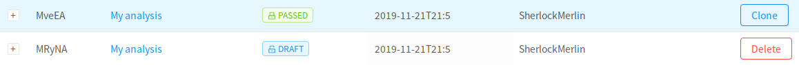

Cloning analyses
In Neuroscout you can only edit analyses that are still in DRAFT mode; that is, analyses that have not been submitted for, and passed, validation.
Then, how can we make a similar analysis, or the same analysis in a different dataset, without starting from scratch?
In Neuroscout, we can accomplish this using a "clone and fork" model. Think of this as using "Save As" in a word editor, instead of "Save".
Simply click on the Clone button next to any PASSED analysis, in the analysis browser.

Doing so, will create an exact copy of this analysis, with a new ID. This works exactly the same if you clone a public analysis, or an analysis you've previously created.

Internally, it is recorded that this new analysis is based on an existing analysis, preserving the provenance of this model design.
Editing cloned analyses
Editing cloned analyses is no different from creating any other analysis. By clicking the name of the new analysis, you can launch the analysis builder. We recommend editing the name of this analysis to make it easier to differentiate from the previous one.
Otherwise, proceed to edit and submit this analysis as usual.
Changing datasets, keeping predictors
What if you want to clone an existing analysis in order to run the same model on a different dataset?
Simply select a new dataset from the list, and advance to the Predictors tab.
Neuroscout will attempt to find the same predictors in this dataset, and pre-populate the list of selected predictors. If a given predictor cannot be found in this newly selected dataset, it will simply be removed from the model.
Danger
If a predictor cannot be found in a new dataset, and is removed from the model, all contrasts involving that predictor will also be removed.